Запросы
1 запрос
Найти работников-садовник с образованием из КОУ
select * from decorator where education = 'gardener' and educational_institution = 'KOU';
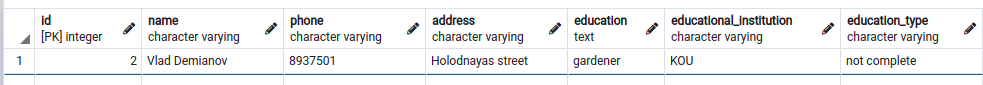
2 запрос
Найти количество работников из двух институтов
select count(*) from decorator where educational_institution = 'KOU' or educational_institution = 'KIT';
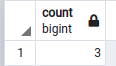
3 запрос
Вывести информацию о работниках, закрепленных за парками 1 и 2
select id, name, education from decorator where id in (select id from decorator_objects where object_id = 1 or object_id = 2);
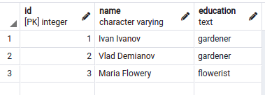
4 запрос
Вывести информацию о том, кто какой цветок поливал и в какое время
select decorator.name, plants.id, plants.watering_time from timetable inner join plants on plants.id = timetable.plant_id inner join decorator on decorator.id = timetable.decorator_id;
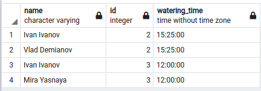
5 запрос
Найти самую ранюю дату, в которую было посажено растение
select MIN(planting_date) from plants;
6 запрос
Вывести названия улиц без слова "улица"
select id, name, replace(address, 'street', '') from decorator;
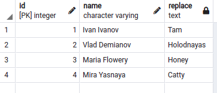
7 запрос
Вывести айди, возраст, номер зоны в парке и название парка для парка под номером 1
select plants.id, age, zone_id, object.name from plants inner join zone on zone.id = plants.zone_id inner join object on object.id = zone.object_id where object.id = 1;
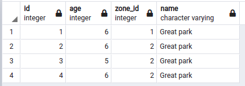
8 запрос
Вывести для каждого растения его возраст и тип
select plants.id, age, plants_type.name from plants inner join plants_type on plants_type.id = plants.plant_type;
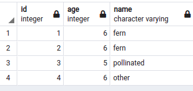
9 запрос
Найти растения, которые были посажены в 2015 году
select id, planting_date from plants where extract(year from planting_date) = '2015';
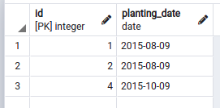
10 запрос
Найти, сколько в среднем требуется литров воды на полив растений определенного типа
select plants_type.name, AVG(water_amount) from plants inner join plants_type on plants_type.id = plants.plant_type group by plants_type.name;
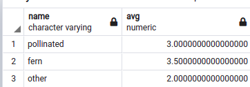
11 запрос
Найти средний возраст растений определенного типа
select plants_type.name, AVG(age) from plants inner join plants_type on plants_type.id = plants.plant_type group by plants_type.name;
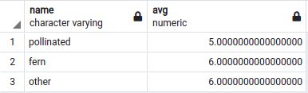
12 запрос
Найти растения, которые были посажены в тот же день, что и был заключен контракт
select id, planting_date from plants where planting_date in (select planting_date from plants intersect select contract_date from object);
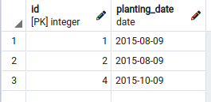
13 запрос
Вывести растения, их возраст и режим полива, отсортировать по возрасту
select plants.id, age, watering_regime.name from plants inner join watering_regime on watering_regime.id = plants.watering_regime order by age desc;
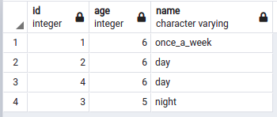
14 запрос
Найти те режимы полива, которым требуется в среднем больше, чем 3 литра воды за раз
select watering_regime.name, avg(water_amount) from plants inner join watering_regime on watering_regime.id = plants.watering_regime group by watering_regime.name having avg(water_amount) > 3;
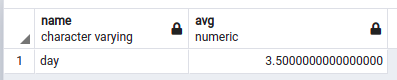
15 запрос
Вывести зоны для парков, отсортировать по дате контракта
select * from object inner join zone on object.id = zone.object_id order by contract_date desc;
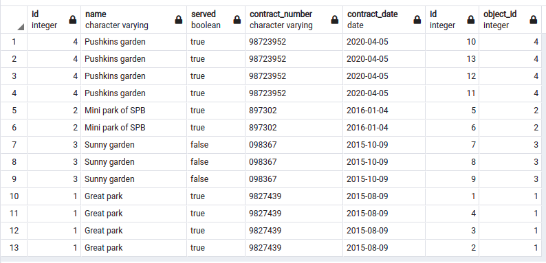
16 запрос
Вывести информацию о работниках, если есть парки, которые обслуживаются
select * from decorator where exists (select * from object where served = true);
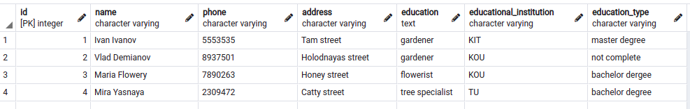
17 запрос
Найти количество растений, посаженых в 2015
select count(*) from plants where extract(year from planting_date) = '2015';
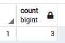
18 запрос
Вывести имена работников-бакалавров с маленькой буквы
select lower(name) from decorator where education_type = 'bachelor degree' and id >1;
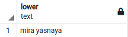